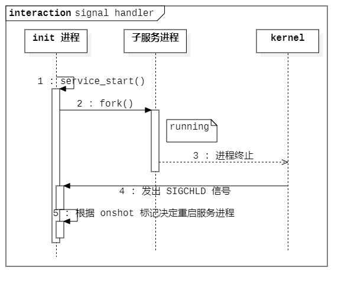

前言 Android 系统启动后，内核会创建 0 号内核进程 idle 进程，然后 idle 进程通过调用 kernel_thread 函数，以 kernel_init 函数作为参数，通过回调 kernel_init 函数执行可执行文件 /init 创建 Android 系统中的第一个用户级别的进程 init 进程，init 进程的 pid = 1，它是所有用户空间进程的始祖，init 进程会通过 fork 分裂出 servicemanager（Binder 服务管理服务）、zygote（Android 系统中第一个 Java 进程）以及 surfaceflinger（图形服务）等系统核心服务进程，理解 init 进程的启动过程以及所做的工作将为理解整个 Android 系统运行机制打下基础。
1 2 3 kernel_thread(kernel_init, NULL , CLONE_FS);
概述 init 进程主要做了如下工作：
挂载 / 节点上的重要目录；
初始化内核 log（/dev/kmsg）；
加载系统属性，提供属性设置服务，根据属性值变化做出响应（触发 .rc 文件中命令或启停止服务）；
解析并执行 init.rc 文件，根据其内容描述启动相应服务，初始化相应设备节点；
负责子进程的善后工作，清理子进程，防止其成为僵尸进程，或者根据配置重启进程。
参考相关资料，对 Android 6.0.1 系统中 init 进程启动关键流程进行分析。
init 进程入口 /init 可执行文件的对应代码在 /system/core/init/init.cpp 中，入口为 main 函数。
1 2 3 4 5 6 7 8 9 10 11 12 13 14 15 16 17 18 19 20 21 22 23 24 25 26 27 28 29 30 31 32 33 34 35 36 37 38 39 40 41 42 43 44 45 46 47 48 49 50 51 52 53 54 55 56 57 58 59 60 61 62 63 64 65 66 67 68 69 70 71 72 73 74 75 76 77 78 79 80 81 82 83 84 85 86 87 88 89 90 91 92 93 94 95 96 97 98 99 100 101 102 103 104 105 106 107 108 109 110 111 112 113 114 115 116 117 118 119 120 121 122 123 124 125 126 127 128 129 130 131 132 133 134 135 136 137 138 139 140 141 142 143 144 145 146 147 148 149 150 151 int main (int argc, char **argv) if (!strcmp (basename (argv[0 ]), "ueventd" )) { return ueventd_main (argc, argv); } if (!strcmp (basename (argv[0 ]), "watchdogd" )) { return watchdogd_main (argc, argv); } umask (0 ); add_environment ("PATH" , _PATH_DEFPATH); bool is_first_stage = (argc == 1 ) || (strcmp (argv[1 ], "--second-stage" ) != 0 ); if (is_first_stage) { mount ("tmpfs" , "/dev" , "tmpfs" , MS_NOSUID, "mode=0755" ); mkdir ("/dev/pts" , 0755 ); mkdir ("/dev/socket" , 0755 ); mount ("devpts" , "/dev/pts" , "devpts" , 0 , NULL ); mount ("proc" , "/proc" , "proc" , 0 , NULL ); mount ("sysfs" , "/sys" , "sysfs" , 0 , NULL ); } open_devnull_stdio (); klog_init (); klog_set_level (KLOG_NOTICE_LEVEL); NOTICE ("init%s started!\n" , is_first_stage ? "" : " second stage" ); if (!is_first_stage) { close (open ("/dev/.booting" , O_WRONLY | O_CREAT | O_CLOEXEC, 0000 )); property_init (); process_kernel_dt (); process_kernel_cmdline (); export_kernel_boot_props (); } selinux_initialize (is_first_stage); if (is_first_stage) { if (restorecon ("/init" ) == -1 ) { ERROR ("restorecon failed: %s\n" , strerror (errno)); security_failure (); } char *path = argv[0 ]; char *args[] ={ path, const_cast < char *>("--second-stage" ), nullptr } ; if (execv (path, args) == -1 ) { ERROR ("execv(\"%s\") failed: %s\n" , path, strerror (errno)); security_failure (); } } INFO ("Running restorecon...\n" ); restorecon ("/dev" ); restorecon ("/dev/socket" ); restorecon ("/dev/__properties__" ); restorecon_recursive ("/sys" ); epoll_fd = epoll_create1 (EPOLL_CLOEXEC); if (epoll_fd == -1 ) { ERROR ("epoll_create1 failed: %s\n" , strerror (errno)); exit (1 ); } signal_handler_init (); property_load_boot_defaults (); start_property_service (); init_parse_config_file ("/init.rc" ); action_for_each_trigger ("early-init" , action_add_queue_tail); queue_builtin_action (wait_for_coldboot_done_action, "wait_for_coldboot_done" ); queue_builtin_action (mix_hwrng_into_linux_rng_action, "mix_hwrng_into_linux_rng" ); queue_builtin_action (keychord_init_action, "keychord_init" ); queue_builtin_action (console_init_action, "console_init" ); action_for_each_trigger ("init" , action_add_queue_tail); queue_builtin_action (mix_hwrng_into_linux_rng_action, "mix_hwrng_into_linux_rng" ); char bootmode[ PROP_VALUE_MAX]; if (property_get ("ro.bootmode" , bootmode) > 0 && strcmp (bootmode, "charger" ) == 0 ) { action_for_each_trigger ("charger" , action_add_queue_tail); } else { action_for_each_trigger ("late-init" , action_add_queue_tail); } queue_builtin_action (queue_property_triggers_action, "queue_property_triggers" ); while (true ) { if (!waiting_for_exec) { execute_one_command (); restart_processes (); } int timeout = -1 ; if (process_needs_restart) { timeout = (process_needs_restart - gettime ()) * 1000 ; if (timeout < 0 ) timeout = 0 ; } if (!action_queue_empty () || cur_action) { timeout = 0 ; } bootchart_sample ( & timeout); epoll_event ev; int nr = TEMP_FAILURE_RETRY (epoll_wait (epoll_fd, & ev, 1 , timeout)); if (nr == -1 ) { ERROR ("epoll_wait failed: %s\n" , strerror (errno)); } else if (nr == 1 ) { ((void } } return 0 ; }
init 首先处于内核空间，即 is_first_stage = true，在挂载几个关键设备节点和初始化 SELinux 之后，使用 exec 重新执行 init 进入 second stage，从而降低进程权限级别，从内核空间降低至 init 级别。
整个 init 流程所做的工作基本已经列举出来了，下面针对各个函数细节进行解析。
内核日志 在 Android 系统提供的 log 系统未初始化前，使用内核的 log 系统进行日志输出。
1 2 3 4 5 6 7 8 9 int main (int argc, char ** argv) klog_init (); klog_set_level (KLOG_NOTICE_LEVEL); }
1 2 3 4 5 6 7 #define KLOG_ERROR_LEVEL 3 #define KLOG_WARNING_LEVEL 4 #define KLOG_NOTICE_LEVEL 5 #define KLOG_INFO_LEVEL 6 #define KLOG_DEBUG_LEVEL 7
1 2 3 4 5 6 7 8 9 10 11 12 13 14 15 16 17 18 19 20 21 22 23 24 25 26 27 28 29 30 31 32 void klog_set_level (int level) klog_level = level; } void klog_init (void ) if (klog_fd >= 0 ) return ; klog_fd = open("/dev/kmsg" , O_WRONLY | O_CLOEXEC); if (klog_fd >= 0 ) { return ; } static const char * name = "/dev/__kmsg__" ; if (mknod(name, S_IFCHR | 0600 , (1 << 8 ) | 11 ) == 0 ) { klog_fd = open(name, O_WRONLY | O_CLOEXEC); unlink(name); } } void klog_writev (int level, const struct iovec* iov, int iov_count) if (level > klog_level) return ; if (klog_fd < 0 ) klog_init(); if (klog_fd < 0 ) return ; TEMP_FAILURE_RETRY(writev(klog_fd, iov, iov_count)); }
TEMP_FAILURE_RETRY 宏 TEMP_FAILURE_RETRY 是系统代码中常用的宏，用于在调用函数失败时进行不断重新调用，然后获得返回值：
1 2 3 4 5 6 7 8 9 #ifndef TEMP_FAILURE_RETRY #define TEMP_FAILURE_RETRY(exp) ({ \ typeof (exp) _rc; \ do { \ _rc = (exp); \ } while (_rc == -1 && errno == EINTR); \ _rc; \ }) #endif
信号处理 single_handler_init 用于处理子进程退出后的工作，通过捕捉 SIGCHLD 信号，根据 .rc 文件中的配置对子进程进行清理或者重启操作。
1 2 3 4 5 6 7 int main (int argc, char ** argv) signal_handler_init (); }
1 2 3 4 5 6 7 8 9 10 11 12 13 14 15 16 17 18 19 20 21 22 23 24 25 26 27 28 29 30 31 32 33 34 35 36 37 38 39 40 41 42 43 44 45 46 47 48 49 50 51 52 53 54 55 56 57 58 59 60 61 62 63 64 65 66 67 68 69 70 71 72 73 74 75 76 77 78 79 80 81 82 83 84 85 86 87 88 89 90 91 92 93 94 95 96 97 98 99 100 101 102 103 104 105 106 107 108 109 110 111 112 113 114 115 116 117 118 119 120 121 122 123 124 125 126 127 128 129 130 131 132 133 134 135 136 137 138 139 140 141 142 143 144 145 146 147 148 149 150 151 152 153 154 static int signal_write_fd = -1 ;static int signal_read_fd = -1 ;static bool wait_for_one_process () int status; pid_t pid = TEMP_FAILURE_RETRY (waitpid (-1 , &status, WNOHANG)); if (pid == 0 ) { return false ; } else if (pid == -1 ) { ERROR ("waitpid failed: %s\n" , strerror (errno)); return false ; } service* svc = service_find_by_pid (pid); std::string name; if (svc) { name = android::base::StringPrintf ("Service '%s' (pid %d)" , svc->name, pid); } else { name = android::base::StringPrintf ("Untracked pid %d" , pid); } NOTICE ("%s %s\n" , name.c_str (), DescribeStatus (status).c_str ()); if (!svc) { return true ; } if (!(svc->flags & SVC_ONESHOT) || (svc->flags & SVC_RESTART)) { NOTICE ("Service '%s' (pid %d) killing any children in process group\n" , svc->name, pid); kill (-pid, SIGKILL); } for (socketinfo* si = svc->sockets; si; si = si->next) { char tmp[128 ]; snprintf (tmp, sizeof "/%s" , si->name); unlink (tmp); } if (svc->flags & SVC_EXEC) { INFO ("SVC_EXEC pid %d finished...\n" , svc->pid); waiting_for_exec = false ; list_remove (&svc->slist); free (svc->name); free (svc); return true ; } svc->pid = 0 ; svc->flags &= (~SVC_RUNNING); if ((svc->flags & SVC_ONESHOT) && !(svc->flags & SVC_RESTART)) { svc->flags |= SVC_DISABLED; } if (svc->flags & (SVC_DISABLED | SVC_RESET)) { svc->NotifyStateChange ("stopped" ); return true ; } time_t now = gettime (); if ((svc->flags & SVC_CRITICAL) && !(svc->flags & SVC_RESTART)) { if (svc->time_crashed + CRITICAL_CRASH_WINDOW >= now) { if (++svc->nr_crashed > CRITICAL_CRASH_THRESHOLD) { ERROR ("critical process '%s' exited %d times in %d minutes; " "rebooting into recovery mode\n" , svc->name, CRITICAL_CRASH_THRESHOLD, CRITICAL_CRASH_WINDOW / 60 ); android_reboot (ANDROID_RB_RESTART2, 0 , "recovery" ); return true ; } } else { svc->time_crashed = now; svc->nr_crashed = 1 ; } } svc->flags &= (~SVC_RESTART); svc->flags |= SVC_RESTARTING; struct listnode * node ; list_for_each (node, &svc->onrestart.commands) { command* cmd = node_to_item (node, struct command, clist); cmd->func (cmd->nargs, cmd->args); } svc->NotifyStateChange ("restarting" ); return true ; } static void reap_any_outstanding_children () while (wait_for_one_process ()) { } } void register_epoll_handler (int fd, void (*fn)()) epoll_event ev; ev.events = EPOLLIN; ev.data.ptr = reinterpret_cast <void *>(fn); if (epoll_ctl (epoll_fd, EPOLL_CTL_ADD, fd, &ev) == -1 ) { ERROR ("epoll_ctl failed: %s\n" , strerror (errno)); } } static void handle_signal () char buf[32 ]; read (signal_read_fd, buf, sizeof reap_any_outstanding_children (); } static void SIGCHLD_handler (int ) if (TEMP_FAILURE_RETRY (write (signal_write_fd, "1" , 1 )) == -1 ) { ERROR ("write(signal_write_fd) failed: %s\n" , strerror (errno)); } } void signal_handler_init () int s[2 ]; if (socketpair (AF_UNIX, SOCK_STREAM | SOCK_NONBLOCK | SOCK_CLOEXEC, 0 , s) == -1 ) { ERROR ("socketpair failed: %s\n" , strerror (errno)); exit (1 ); } signal_write_fd = s[0 ]; signal_read_fd = s[1 ]; struct sigaction act ; memset (&act, 0 , sizeof act.sa_handler = SIGCHLD_handler; act.sa_flags = SA_NOCLDSTOP; sigaction (SIGCHLD, &act, 0 ); reap_any_outstanding_children (); register_epoll_handler (signal_read_fd, handle_signal); }
当子进程退出时，内核将发出 SIGCHLD 信号，对于子进程的处理函数 singal_handler_init 流程概括如下：
首先建立一对 socket 匿名读写通道，从而持有一对读写文件描述符；
将子进程退出时的 SIGCHLD 信号回调函数（SIGCHLD_handler）绑定到 socket 写端，当有信号到来时，向写端写入“1”；
调用一次 reap_any_outstanding_children 处理目前子进程的退出情况；
使用 epoll_ctl IO 监听设置函数将 socket 读端的可读时机绑定到回调函数，当读端可被读取时（说明 socket 写端写入了数据），表明有子进程退出，此时调用回调函数（handle_signal）；
handle_signal 处理子进程退出，使用 wait_for_one_process 等待子进程退出后，通过进程 pid 查询其所承载的服务，根据服务对应的标记，针对性的对进程进行清理或者重启处理。
时序图 使用时序图描述上述流程：

属性服务 1 2 3 4 5 6 7 8 9 10 11 12 13 14 15 16 int main (int argc, const **args) if (!is_first_stage) { property_init (); } property_load_boot_defaults (); start_property_service (); }
1 2 3 4 5 6 7 8 9 10 11 12 13 14 15 16 17 18 19 20 21 22 23 24 25 26 27 28 29 30 31 32 33 34 35 36 37 38 39 40 41 42 43 44 45 46 47 48 49 50 51 52 53 54 55 56 57 58 59 60 61 62 63 64 65 66 67 68 69 70 71 72 73 74 75 76 77 78 79 80 81 82 83 84 85 86 87 88 89 90 91 92 93 94 95 96 97 98 99 100 101 102 103 104 105 106 107 108 109 110 111 112 113 114 115 116 117 118 119 120 121 122 123 124 125 126 127 128 129 130 131 132 133 134 135 136 137 138 139 140 141 142 143 144 145 146 147 148 149 150 151 152 153 154 155 156 157 158 159 160 161 162 163 164 165 166 167 168 169 170 171 172 173 174 175 176 177 178 179 180 181 182 183 184 185 186 187 188 189 190 191 192 193 194 195 196 197 198 199 200 201 202 203 204 205 206 207 208 209 static workspace pa_workspace;void property_init () if (property_area_initialized) { return ; } property_area_initialized = true ; if (__system_property_area_init()) { return ; } pa_workspace.size = 0 ; pa_workspace.fd = open (PROP_FILENAME, O_RDONLY | O_NOFOLLOW | O_CLOEXEC); if (pa_workspace.fd == -1 ) { ERROR ("Failed to open %s: %s\n" , PROP_FILENAME, strerror (errno)); return ; } } void property_load_boot_defaults () 2 load_properties_from_file (PROP_PATH_RAMDISK_DEFAULT, NULL ); } static void load_properties_from_file (const char * filename, const char * filter) Timer t; std::string data; if (read_file (filename, &data)) { data.push_back ('\n' ); load_properties (&data[0 ], filter); } NOTICE ("(Loading properties from %s took %.2fs.)\n" , filename, t.duration ()); } void start_property_service () property_set_fd = create_socket (PROP_SERVICE_NAME, SOCK_STREAM | SOCK_CLOEXEC | SOCK_NONBLOCK, 0666 , 0 , 0 , NULL ); if (property_set_fd == -1 ) { ERROR ("start_property_service socket creation failed: %s\n" , strerror (errno)); exit (1 ); } listen (property_set_fd, 8 ); register_epoll_handler (property_set_fd, handle_property_set_fd); } static void handle_property_set_fd () prop_msg msg; int s; int r; struct ucred cr ; struct sockaddr_un addr ; socklen_t addr_size = sizeof socklen_t cr_size = sizeof char * source_ctx = NULL ; struct pollfd ufds [1]; const int timeout_ms = 2 * 1000 ; int nr; if ((s = accept (property_set_fd, (struct sockaddr *) &addr, &addr_size)) < 0 ) { return ; } if (getsockopt (s, SOL_SOCKET, SO_PEERCRED, &cr, &cr_size) < 0 ) { close (s); ERROR ("Unable to receive socket options\n" ); return ; } ufds[0 ].fd = s; ufds[0 ].events = POLLIN; ufds[0 ].revents = 0 ; nr = TEMP_FAILURE_RETRY (poll (ufds, 1 , timeout_ms)); if (nr == 0 ) { ERROR ("sys_prop: timeout waiting for uid=%d to send property message.\n" , cr.uid); close (s); return ; } else if (nr < 0 ) { ERROR ("sys_prop: error waiting for uid=%d to send property message: %s\n" , cr.uid, strerror (errno)); close (s); return ; } r = TEMP_FAILURE_RETRY (recv (s, &msg, sizeof if (r != sizeof ERROR ("sys_prop: mis-match msg size received: %d expected: %zu: %s\n" , r, sizeof strerror (errno)); close (s); return ; } switch case PROP_MSG_SETPROP: msg.name[PROP_NAME_MAX-1 ] = 0 ; msg.value[PROP_VALUE_MAX-1 ] = 0 ; if (!is_legal_property_name (msg.name, strlen (msg.name))) { ERROR ("sys_prop: illegal property name. Got: \"%s\"\n" , msg.name); close (s); return ; } getpeercon (s, &source_ctx); if (memcmp (msg.name,"ctl." ,4 ) == 0 ) { close (s); if (check_control_mac_perms (msg.value, source_ctx)) { handle_control_message ((char *) msg.name + 4 , (char *) msg.value); } else { ERROR ("sys_prop: Unable to %s service ctl [%s] uid:%d gid:%d pid:%d\n" , msg.name + 4 , msg.value, cr.uid, cr.gid, cr.pid); } } else { if (check_perms (msg.name, source_ctx)) { property_set ((char *) msg.name, (char *) msg.value); } else { ERROR ("sys_prop: permission denied uid:%d name:%s\n" , cr.uid, msg.name); } close (s); } freecon (source_ctx); break ; default : close (s); break ; } } static int property_set_impl (const char * name, const char * value) size_t namelen = strlen (name); size_t valuelen = strlen (value); if (!is_legal_property_name (name, namelen)) return -1 ; if (valuelen >= PROP_VALUE_MAX) return -1 ; if (strcmp ("selinux.reload_policy" , name) == 0 && strcmp ("1" , value) == 0 ) { 2 if (selinux_reload_policy () != 0 ) { ERROR ("Failed to reload policy\n" ); 2 } } else if (strcmp ("selinux.restorecon_recursive" , name) == 0 && valuelen > 0 ) { if (restorecon_recursive (value) != 0 ) { ERROR ("Failed to restorecon_recursive %s\n" , value); } } prop_info* pi = (prop_info*) __system_property_find(name); if (pi != 0 ) { if (!strncmp (name, "ro." , 3 )) return -1 ; __system_property_update(pi, value, valuelen); } else { int rc = __system_property_add(name, namelen, value, valuelen); if (rc < 0 ) { return rc; } } if (strncmp ("net." , name, strlen ("net." )) == 0 ) { if (strcmp ("net.change" , name) == 0 ) { return 0 ; } property_set ("net.change" , name); } else if (persistent_properties_loaded && strncmp ("persist." , name, strlen ("persist." )) == 0 ) { write_persistent_property (name, value); } property_changed (name, value); return 0 ; } int property_set (const char * name, const char * value) int rc = property_set_impl (name, value); if (rc == -1 ) { ERROR ("property_set(\"%s\", \"%s\") failed\n" , name, value); } return rc; }
概括属性服务初始化流程如下：
property_init 为属性的设置和获取创建共享内存区域；property_load_boot_defaults 加载默认属性文件 /default.prop；start_property_service 启动属性设置服务，创建名为 property_service 的 socket 服务端，当接收到属性设置请求时，检查权限设置属性，阻止设置 ro.* 的属性，当设置 ctl.* 属性时作出相应处理，通知属性变更，触发 init.rc 中依赖的 property 触发器。
setprop 命令（实现代码在 external/toybox/toys/android/setprop.c），将会通过 socket 发送设置属性的请求。
除了上述属性初始化过程中加载的 /default.prop 属性文件，init 通过解析 init.rc 文件执行其中的 load_all_props 步骤（高系统版本为 load_system_props）还会从以下位置依次加载属性文件：
文件
描述
/default.prop
初始设置，此文件属于 initramfs，所以不存在于设备的闪存分区上
/system/build.prop
编译 Android 系统时产生的设置
/system/default.prop
通常为厂商添加的设置
/data/local.prop
编译时使用了 ALLOW_LOCAL_PROP_OVERRIDE 选项，且 ro.debuggable 属性被设置为 1 时，就会加载这个文件。那么开发者可以通过在 /data 分区 push 一个文件的方式，修改之前的设置
/data/proper/persist.
重启后不会丢失的属性，这些属性的前缀为 persist
/factory/factory.prop
较新版本的 Android 不再支持了
init.rc 文件 解析并根据 init.rc 文件内容启动相应的守护进程是 init 进程的核心工作，servicemanager 和 zygote 等服务均是 init 进程通过解析 init.rc 文件的创建的。
1 2 3 4 5 6 7 8 9 10 11 12 int main (int argc, char **argv) init_parse_config_file ("/init.rc" ); action_for_each_trigger ("early-init" , action_add_queue_tail); action_for_each_trigger ("init" , action_add_queue_tail); return 0 ; }
init_parse_config_file 首先解析 init.rc 文件，.rc 文件是用 .rc 文件的特定语法编写的，从 .rc 文件中可以解析出多个阶段的执行流程，例如 early-init，init 等，每个阶段有不同的意义。
init.rc 文件中还导入了许多子 .rc 文件，均是按照 .rc 文件语法编写。
.rc 文件语法 .rc 文件的语法由 trigger 语句块和 service 语句块构成：
trigger 语句块中的命令，会在满足触发条件时被触发执行；service 语句描述需要启动的守护进程。
trigger 语句块的格式是，使用 on 开头，后面跟一个参数，这个参数可以是各个启动阶段的名称（例如 early-init）或者一个 property 关键字，property 后面是冒号 +“属性名=属性值”的格式，这种情况下，触发条件为相应属性的属性值变更为指定的值；
service 语句块的后面跟着服务名称和命令行。
语句块中执行指定动作（action）或命令（command），执行时，init 会分别把属性 init.action 或 init.command 的值设为当前正在执行的动作的名称或当前正在执行命令的名称。
service 语句块下面可以赋予多种选项（option），用来指示服务进程的运行规则，以及进程死亡后的重启规则。
init 启动阶段 下面是 .rc 文件中的典型阶段（按启动顺序排列），根据设备不同，不同厂商可能对其进行定制：
启动阶段
内容
early-init
初始化的第一个阶段，用于设置 SELinux 和 OOM
init
创建文件系统，mount 点以及写内核变量
late-init
初始化晚期，挂载文件系统，启动核心系统服务
early-fs
文件系统半准备被 mount 前需要完成的工作
fs
专门用于加载各个分区
post-fs
在各个文件系统（/data 分区除外）mount 完毕之后需要执行的命令
post-fs-data
解密 /data 分区（如果需要），并 mount 之
early-boot
在属性服务（property service）初始化之后，启动剩余内容之前的作业
boot
正常启动命令
charger
当手机处于充电模式时，需要执行的命令
init 支持的 command 列举 .rc 文件中支持的大部分命令，一部分和 shell 命令具有相同作用：
命令
说明
bootchart_init
启用启动时的信任链验证
chdir directory
等价于 cd 命令（调用 chdir）
chmod octal_perms file
修改文件的指定权限（以 8 进制表示）
chown user group file
等价于 chown user:group file 命令
croot directory
等价于 Linux 的 chroot 命令（调用 chroot(2)）
class_reset service_class
停止与 service_class 相关的所有服务
class_[start|stop] class
启动或者停止 class 参数指定的 service_class 的所有服务
copy src_file dst_file
类似 cp(1) 命令
exec command
执行命令
enable service
启动一个已被 disable 的服务
export varible value
在全局环境中，设置环境变量 varible 的值，影响所有进程
insmod module.ko
加载一个内核模块
load_all_props
加载所有位置属性
load_persist_props
加载 /data/propert 目录中的各个文件中的属性
loglevel level
设置内核的日志级别
mkdir directory
创建一个目录（调用 mkdir(2)）
[re]start service_name
启动/重启服务名与参数 service_name 一致的语句块中的服务
rm[dir] filename
删除一个文件或一个目录（调用 unlink(2)/dmdir(2)）
restorecon[_recursive] path
用 path 参数指定文件重新加载 SELinux 上下文
setcon SEcontext
设置 SELinux 的上下文，init 上下文为 u:r:init:s0
setenforce[0|1]
强制启用或关闭 SELinux
setprop key value
设置指定的系统属性
stop service_name
停止服务名与参数 service_name 一致的语句块中的服务
symlink target src
创建一个符号连接 ln-s，即调用 symlink(2)
trgger trigger_name
激活一个 trigger 语句块（会使 init 重新运行该语句块）
wait file timeout
等待文件 file 创建完毕，等待超时为 timeout 秒
write file value
把 value 写到文件 file 中去，等价于 echo value > file
init 支持的 option 枚举出 init 支持的各个 option 关键字：
选项
说明
capability
支持 Linux 的 capability(7)
class
把服务加入服务组（service group），`可用 class[start
console
把服务定义为一个 console 服务，stdin/stdout/stderr 会被 link 到 /dev/console 上
critial
把服务定义为一个关键服务，一旦崩溃，会自动重启，超过一定次数，系统将重启至 recovery 模式
disable
表示服务不需要启动但，之后还可以手动重启
group
指定服务以指定的 gid 启动，init 会调用 setgid(2) 来完成这个操作
ioprio
指定服务的 I/O 优先级，init 会调用 ioprio_set 来完成这个任务
keycodes
指定触发服务的组合键（key chord）
oneshot
告诉 init 启动该服务，然后就不管它了（忽略掉 SIGCHLD 信号）
onrestart
枚举该服务重启时要执行的命令，通常用来重启其他依赖服务（dependent service）
seclabel
指定应用在该服务上 SELinux 标签（label）
setenv
在服务被 fork() 出来并 exec() 之前，设置环境变量，只有该服务可看到
socket
打开一个 socket，让该服务继承这个 socket
user
指定该服务以 uid 身份运行，init 将调用 setuid(2) 完成这个任务
writepid
把子进程的 pid 写入指定文件中，用于设置 cgroups 资源控制
关键服务启动 查看一下 servicemanager、surfacefliger 和 zygote 服务在 init.rc 文件中的启动配置
1 2 3 4 5 6 7 8 9 10 11 12 13 14 15 16 17 18 19 20 21 22 service servicemanager /system/bin/servicemanager class core user system group system critical onrestart restart healthd onrestart restart zygote onrestart restart media onrestart restart surfaceflinger onrestart restart drm service surfaceflinger /system/bin/surfaceflinger class core user system group graphics drmrpc onrestart restart zygote
zygote 服务的启动在单独的 .rc 文件中，这个 rc 文件在 init.rc 的开头被导入：
1 2 3 4 5 6 7 8 9 import /init.environ.rc import /init.usb.rc import /init.${ro.hardware} .rc import /init.${ro.zygote} .rc import /init.trace.rc
${ro.zygote} 表示 32 位和 64 位 zygote，这里看一下 32 位 zygote 启动描述：
1 2 3 4 5 6 7 8 9 10 11 12 13 14 15 16 service zygote /system/bin/app_process -Xzygote /system/bin --zygote --start-system-server class main priority -20 user root group root readproc reserved_disk socket zygote stream 660 root system onrestart write /sys/android_power/request_state wake onrestart write /sys/power/state on onrestart restart audioserver onrestart restart cameraserver onrestart restart media onrestart restart netd onrestart restart wificond writepid /dev/cpuset/foreground/tasks
所有的 service 里面只有 servicemanager、zygote、surfaceflinger 这 3 个服务有 onrestart 关键字来触发其他 service 启动过程。
可以看到它们之间的依赖关系：
zygote 重启将会触发 audioserver、cameraserver、media 以及相关子进程（包括 system_server 进程）重启；
system_server 重启将会触发 zygote 重启；
surfaceflinger 重启将会触发 zygote 重启；
servicemanager 重启将会触发 zygote、healthd、media、surfaceflinger、drm 重启。
class 表示依赖的服务组，看到 servicemanager 和 surfaceflinger 属于 core，而 zygote 属于 main。
在 init.rc 文件中查找这些服务组的启动时机：
1 2 3 4 5 6 7 8 9 10 11 12 13 14 15 16 17 18 19 20 21 22 23 24 25 26 27 28 29 30 31 32 33 34 35 36 37 38 39 40 41 42 43 44 45 46 47 48 49 50 on early-init on init on late-init trigger early-fs trigger fs trigger post-fs trigger post-fs-data trigger load_all_props_action trigger firmware_mounts_complete trigger early-boot trigger boot on boot class_start core on nonencrypted class_start main class_start late_start on property:vold.decrypt=trigger_encryption start surfaceflinger start encrypt on property:vold.decrypt=trigger_reset_main class_reset main on property:vold.decrypt=trigger_post_fs_data trigger post-fs-data on property:vold.decrypt=trigger_restart_min_framework class_start main on property:vold.decrypt=trigger_restart_framework class_start main class_start late_start on property:vold.decrypt=trigger_shutdown_framework class_reset late_start class_reset main
看到 core 服务组，在 boot 阶段被启动，优先与 main 服务组，boot 由 late-init 阶段触发；main 服务组在 vold.decrypt 属性被改变的多处时机被触发，这些属性将在 vold 服务启动时的相关流程被触发。
下面是 vold 服务的启动内容：
1 2 3 4 5 6 7 8 9 service vold /system/bin/vold \ --blkid_context=u:r:blkid:s0 --blkid_untrusted_context=u:r:blkid_untrusted:s0 \ --fsck_context=u:r:fsck:s0 --fsck_untrusted_context=u:r:fsck_untrusted:s0 class core socket vold stream 0660 root mount socket cryptd stream 0660 root mount ioprio be 2
vold 是用于管理和控制 Android 外部存储介质的服务进程，它的实现代码在 system/vold/cryptfs.c 中。
zygote 以 zygote 服务为出发点，分析启动一个服务的具体代码。
前面 init.cpp 中，调用 init_parse_config_file("/init.rc") 解析 init.rc 文件，内部会辗转调用到 parse_service 函数，它用来解析 service 信息，会创建一个 service 的结构体，保存服务进程的信息，同时创建了一个 socket，保存在结构体成员 socketinfo *sockets 中，同时 onrestart 相关的信息存放在成员 action onrestart 中，action 也是一个结构体，存放相关执行动作：
1 2 3 4 5 6 7 8 9 10 11 12 13 14 15 16 17 18 19 20 21 22 23 struct service { void NotifyStateChange (const char * new_state) struct listnode slist ; char *name; const char *classname; unsigned flags; pid_t pid; uid_t uid; gid_t gid; struct socketinfo *sockets ; struct svcenvinfo *envvars ; struct action onrestart ; };
触发启动服务的代码由 do_class_start 函数负责，它的实现在 /system/core/init/builtins.cpp 中：
1 2 3 4 5 6 7 8 9 10 11 12 13 14 15 static void service_start_if_not_disabled (struct service *svc) if (!(svc->flags & SVC_DISABLED)) { service_start (svc, NULL ); } else { svc->flags |= SVC_DISABLED_START; } } int do_class_start (int nargs, char **args) service_for_each_class (args[1 ], service_start_if_not_disabled); return 0 ; }
service_start 函数中会首先使用 fork 创建子进程，然后在子进程中调用 execve(svc->args[0], (char**) svc->args, (char**) ENV) 执行 zygote 的可执行程序 /system/bin/app_process，从而进入 zygote 的流程中。
zygote 的实现代码在 /frameworks/base/cmds/app_process/app_main.cpp 中。
至于其他服务的启动，以此类推。
总结 到这里就分析完了 init 进程的整个流程，这对于了解之后的系统服务的启动流程奠定了基础。
附录 相关概念的解释
IO 多路复用 阻塞 I/O（Blocking IO）：
例如用户进程使用 recvfrom 系统调用，kernel 开始准备数据，对于 Network IO，很多数据一开始没有到达，需要等待，此时用户进程将被阻塞，当 kernel 等到数据准备好的时候，将数据从内核空间拷贝到用户空间，返回结果，此时用户进程解除 block 状态。
IO 多路复用（IO multiplexing）：
和阻塞 IO 类似，在发出时会被阻塞，但可以等待多个数据报就绪（datagram ready），即可以处理多个链接。例如 select，它相当于一个代理，用户进程调用后会被阻塞，此时 select 在内核空间会监听多个 datagram（如 socket 连接），如果启动一个数据就绪了就返回。
僵尸进程 僵尸进程是指当子进程比父进程先结束，而父进程又没有回收子进程，释放子进程的资源，此时子进程将成为一个僵尸进程。如果父进程先退出，则子进程被 init 进程接管，子进程退出后 init 会回收其占用的相关资源。
系统会为僵尸进程保存一定的信息，包括 pid 和运行时间等，系统所能使用的进程号是有限的，如果产生大量的僵尸进程，将因为没有可用的进程号而导致系统不能产生新的进程。
僵尸进程的避免：
父进程通过 wait 和 waitpid 等函数等待子进程结束，这会导致父进程挂起；
如果父进程很忙，那么可以用 signal 函数为 SIGCHLD 安装 handler，因为子进程结束后， 父进程会收到该信号，可以在 handler 中调用 wait 回收；
如果父进程不关心子进程什么时候结束，那么可以用 signal（SIGCHLD，SIG_IGN） 通知内核，自己对子进程的结束不感兴趣，那么子进程结束后，内核会回收， 并不再给父进程发送信号；
还有一些技巧，就是 fork 两次，父进程 fork 一个子进程，然后继续工作，子进程 fork 一个孙进程后退出，那么孙进程被 init 接管，孙进程结束后，init 会回收。不过子进程的回收 还要自己做。
参考